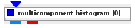

|
|
|

Builds multicomponent or multispatial data histograms.
| input port | type | description | data acceptors |
|---|---|---|---|
| inField | VNField | Regular Field Irregular Field |
|
| output port | type | description | data schemas |
| outField | VNRegularField | Regular Field |
|
| outObj | VNGeometryObject |
Multicomponent Histogram
The module builds multicomponent or multispatial data histograms.
The data range of the field components or the coordinates are divided into bins. The histogram counts how many data values/coordinates (in 2D/3D their combinations) fall into particular bins.
Input data
Any regular or irregular field.
Output data
A regular 1D, 2D or 3D field and a geometric object.
Computation parameters
Histogram resolution is defined by its dimensions and the number of bins in each dimension.
The Dimensions radio buttons in the basic parameter tab defines the dimensions of the output histogram as 1D, 2D or 3D.
The x, y and z text fields below the Dimensions radio buttons describe the number of bins in the appropriate dimension.
The binning parameter are defined either in the by components tab or the by coordinates tab and describe the subordination of field components or field coordinates to particular indices of the output field.
The set geometry to data ranges ???
If logarithmic scale check box is on data is represented in logarithmic scale. The log constant input field defines the base of the logarithmic function.
The drop background count ????
The advanced parameters tab defines possible additional histogram operations on the data elements inside the bins:
The results of the operations appear as additional components in the output field and can be used as color component.
The operations are not executed by default which is signalized by switched off options. To execute an operation the user choses the appropriate button to switch it on, alternatively using log scale.
Additional histogram data filtering can be executed by defining logical operations in the advanced tab. In order to define logical operations click into the appropriate table entry and choose components and operations from the appearing drop down lists.
Choose the Compute button to generate output data.
Presentation parameters
Presentation tab contents are described in the common interfaces section unter the Presentation Panel entry.
Example
Choose test regular field 3D module from the test objects library, multicomponent histogram module from the data filters library and connect them to viewer 2D. In multicomponent histogram GUI choose for Dimensions 2D, for component x trig functions and for y gaussians. Press the compute button.